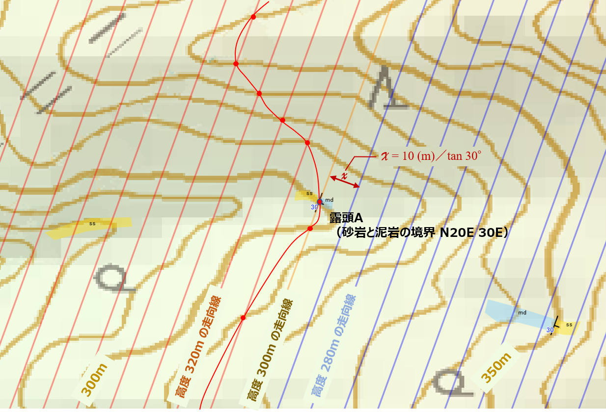

異なる岩相の地層が重なっている地層の層理面の走向・傾斜が判れば、その地点から岩相の境界がどのように広がっているのかの境界線を引くことができます。
| 走向線を描画して境界線を引く | |
| 例えば、右図のように標高
300mの地点の露頭Aで、砂岩と泥岩の境界が見られ、走向・傾斜を測定したところ、N20E 30Eであったとします。 等高線は10m間隔のため、露頭Aの走向・傾斜をもとにした10ｍ間隔の走向線を引きます。 走向線の間隔 x は、x=10 (m)／tan 30° のため、x= 17(m)となります。 この各高度ごとの走向線と同高度の等高線（赤い点）を結んでいった線（赤い線）が境界の伸びている方向になります。 |
 |